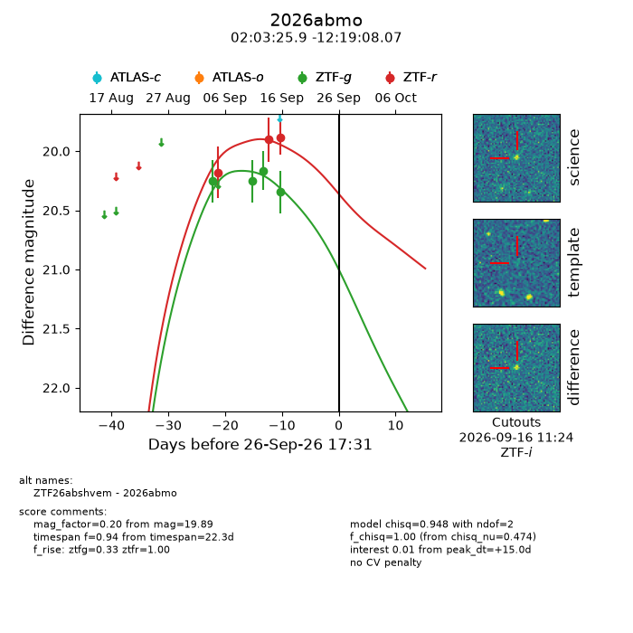
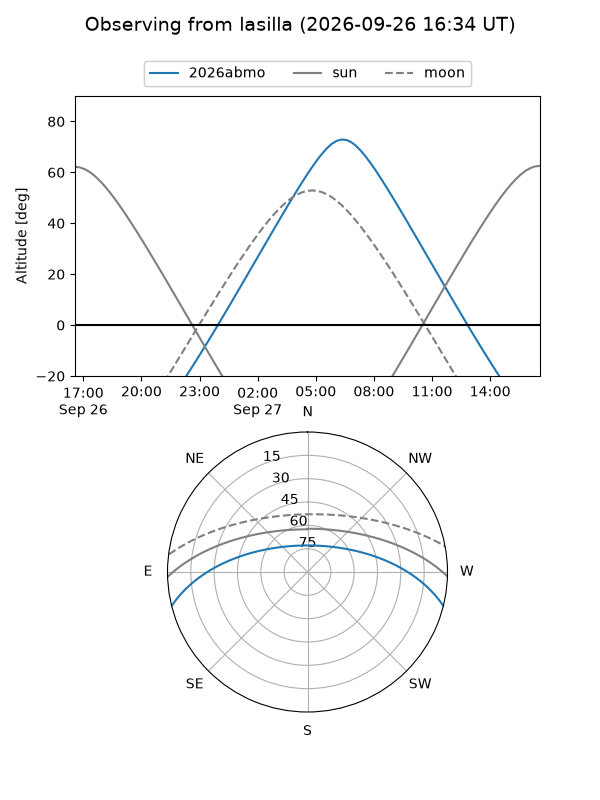
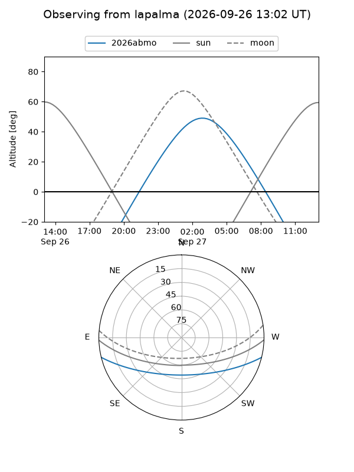
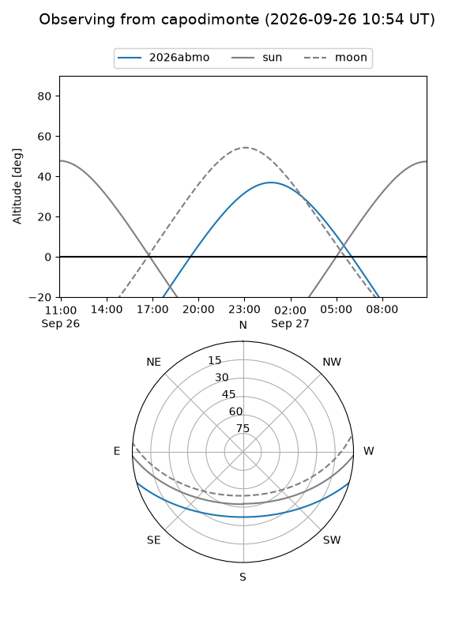
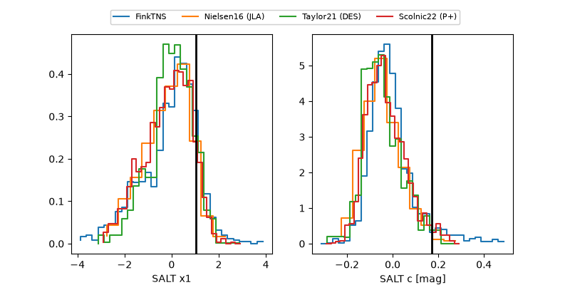

2026abmo
Target 2026abmo at 2026-09-26 17:33
Aliases and brokers:
FINK-ZTF: ztf.fink-portal.org/ZTF26abshvem
Lasair-ZTF: lasair-ztf.lsst.ac.uk/objects/ZTF26abshvem
ALeRCE-ZTF: alerce.online/object/ZTF26abshvem
YSE-PZ: ziggy.ucolick.org/yse/transient_detail/2026abmo
TNS name: wis-tns.org/object/2026abmo
Direct TNS query: direct search
alt names
ZTF26abshvem (ztf,fink_ztf)
2026abmo (tns,yse)
Coordinates:
equatorial (ra, dec) = 30.8579,-12.31891
equatorial (HMS+DMS) = 02:03:25.90,-12:19:08.07
galactic (l, b) = (175.1741,-67.55295)
Flags:
TNS type: nan
peak dt: +15.0
Photometry:
last ztfg=20.35, ztfr=19.89
4 ztfg, 3 ztfr detections
Lightcurve

Visibility



Additional plots
